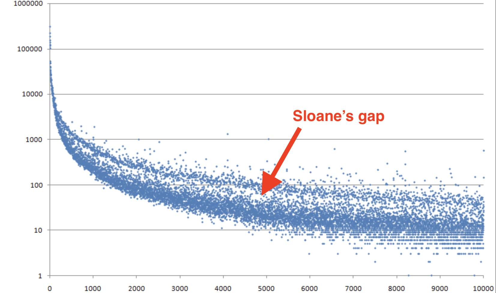

ELOISE LIKES WRITING: SLOANE'S GAP
Fun fact: There's an encyclopedia of integer sequences online. If you go to oeis.org and type in "1,1,2,3,5,8,13", you will get the search result "Fibonacci numbers" and it will tell you some things about them. You can also click to see a graph of them, or (my favorite) to hear the sequence in musical notes.
Someone did something really cool with this, which is graph how often each number shows up in the encyclopedia. The result is below, log scale. The graph starts high on the left because numbers like 0, 1, and 2 show up a lot, and then the graph gets lower as we move right because bigger numbers like 8232 show up less. But what's surprising is that there's a weird gap—there's a top band of numbers, and then there's a space, and then there's a bottom band of numbers. Now why in the heck would there be a space there?
Turns out the numbers in the top band are things like prime numbers, squares and cubes, and numbers with lots of factors—humans are interested in these and they come up a lot. The bottom band is everything else. The popular numbers like primes show up so much more frequently than the unpopular numbers that we get a space. This is called Sloane's Gap.
 back{kind=link}